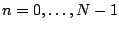
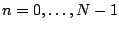
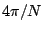
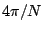
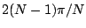
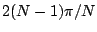
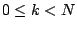
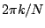
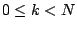
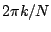

Suppose  is a complex-valued signal that repeats every
is a complex-valued signal that repeats every  samples. (We
are continuing to use complex-valued signals rather than real-valued ones
to simplify the mathematics.) Because of the period
samples. (We
are continuing to use complex-valued signals rather than real-valued ones
to simplify the mathematics.) Because of the period  , the
values of
, the
values of  for
 determine
for
 determine  for all integer values
of
for all integer values
of  .
.
Suppose further that  can be written as a sum of complex sinusoids of
frequency
can be written as a sum of complex sinusoids of
frequency  ,
,  , ,
, ,  , . These are the
partials, starting with the zeroth, for a signal of period
, . These are the
partials, starting with the zeroth, for a signal of period  . We stop at
the
. We stop at
the  th term because the next one would have frequency
th term because the next one would have frequency  , equivalent
to frequency
, equivalent
to frequency  , which is already on the list.
, which is already on the list.
Given the values of  , we wish to find the complex amplitudes of the
partials. Suppose we want the
, we wish to find the complex amplitudes of the
partials. Suppose we want the  th partial, where . The
frequency of this partial is . We can find its complex amplitude
by modulating
th partial, where . The
frequency of this partial is . We can find its complex amplitude
by modulating  downward radians per sample in frequency, so
that the
downward radians per sample in frequency, so
that the  th partial is modulated to frequency zero. Then we pass the signal
through a low-pass filter with such a low cutoff frequency that nothing but the
zero-frequency partial remains. We can do this in effect by averaging over a
huge number of samples; but since the signal repeats every
th partial is modulated to frequency zero. Then we pass the signal
through a low-pass filter with such a low cutoff frequency that nothing but the
zero-frequency partial remains. We can do this in effect by averaging over a
huge number of samples; but since the signal repeats every  samples, this
huge average is the same as the average of the first
samples, this
huge average is the same as the average of the first  samples. In short, to
measure a sinusoidal component of a periodic signal, modulate it down to DC and
then average over one period.
samples. In short, to
measure a sinusoidal component of a periodic signal, modulate it down to DC and
then average over one period.
Let  be the fundamental frequency for the period
be the fundamental frequency for the period  , and
let
, and
let  be the unit-magnitude complex number with argument
be the unit-magnitude complex number with argument  :
: